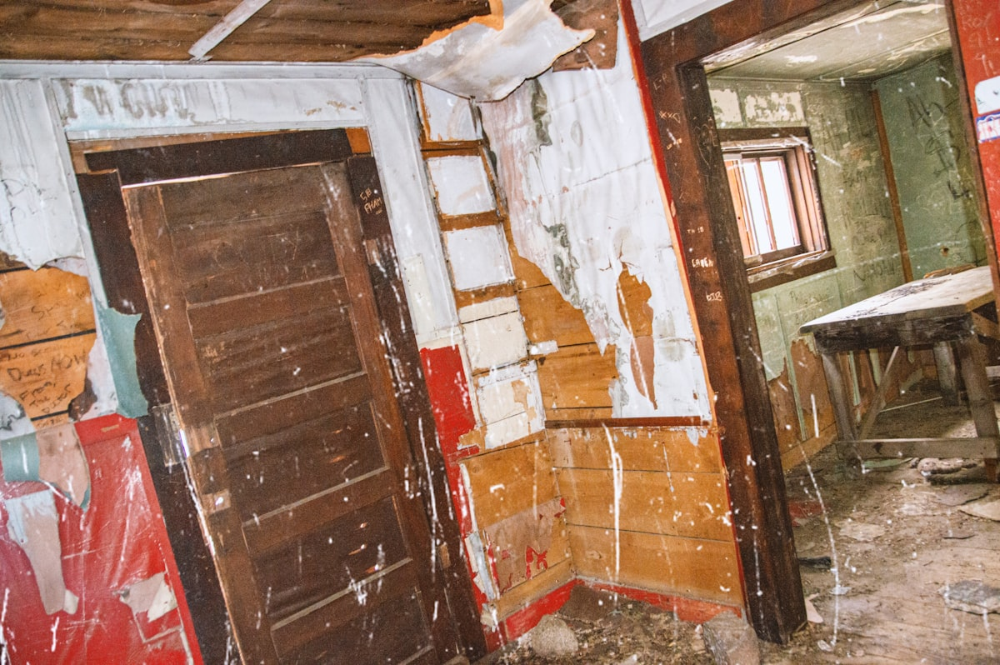

Structural drying is the most important phase of water damage restoration — and the one most often done incorrectly by untrained responders. After water extraction removes standing water, significant moisture remains trapped in structural materials including drywall, wood framing, subflooring, concrete, insulation, and other building components. This trapped moisture must be scientifically removed through controlled evaporation and dehumidification to prevent mold growth, wood rot, material degradation, and odor problems that develop when structures remain wet.
York Restoration employs IICRC-certified structural drying technicians who understand the science of psychrometry — the study of temperature, humidity, and moisture relationships in air. Using this knowledge, they calculate the specific equipment placement, temperature settings, and airflow patterns needed to create optimal evaporation conditions for each unique drying situation. Different materials (drywall, hardwood, concrete, plaster) dry at different rates and require different approaches to reach acceptable moisture levels without causing additional damage.
Our structural drying process includes daily moisture monitoring using calibrated moisture meters, thermo-hygrometers, and thermal imaging cameras. We document moisture readings throughout the drying process, creating a detailed drying log that shows progressive moisture reduction in all affected materials. Equipment is adjusted daily based on these readings to optimize drying efficiency. Drying is complete only when all affected materials reach acceptable moisture standards as defined by IICRC S500 guidelines — not when surfaces simply feel dry to the touch.

When to Call for Structural Drying in York
Recognizing the warning signs early can save you time, money, and prevent significant damage to your property. Here are the most common indicators that it's time to call a professional:
- Moisture meter readings above normal in walls, floors, or ceilings after water damage
- Materials that feel damp or cool to the touch even after visible water is gone
- Continued musty odors after water extraction suggesting trapped moisture
- Drywall that is soft, swollen, or shows moisture staining
- Hardwood floors that are cupping, crowning, or showing gaps between boards
- High humidity levels in affected areas despite ventilation efforts
- Previous water damage that was not professionally dried showing signs of deterioration
Don't Wait Until It's an Emergency
What seems like a minor issue today can turn into a major expense tomorrow. Call York Restoration at (706) 730-9473 at the first sign of trouble.
Ready to Solve Your Structural Drying Problem?
Call York Restoration for fast, reliable service.
Call (706) 730-9473 TodayYour Structural Drying Questions Answered
Why Hire a Professional for Structural Drying?
Structural drying is a science, not a guessing game. Simply placing fans and hoping for the best is the most common cause of secondary mold damage after water events. Professional structural drying requires understanding how different materials absorb and release moisture, calculating the specific grain depression (moisture removal capacity) needed for each situation, and monitoring daily to ensure drying is progressing properly. Without this knowledge, under-drying leaves moisture that feeds mold, while over-drying can damage wood and other materials.
The equipment used for professional structural drying is fundamentally different from consumer products. Commercial LGR (low-grain refrigerant) dehumidifiers remove 10-20 times more moisture from the air than residential dehumidifiers, and high-velocity air movers create the precise airflow patterns needed to accelerate evaporation from structural surfaces. This equipment represents significant investment and requires training to deploy effectively — both reasons why professional drying produces dramatically better outcomes than DIY attempts.
Our Structural Drying Process
We follow a proven process to ensure every job is completed to the highest standards. Here's what you can expect when you choose York Restoration:
Moisture Assessment
Using moisture meters, thermal imaging, and hygrometers, we create a comprehensive moisture map of all affected areas. This map guides equipment placement and establishes baseline readings.
Equipment Deployment
Commercial LGR dehumidifiers and high-velocity air movers are strategically positioned based on our moisture map. Temperature and airflow are optimized for the specific materials being dried.
Daily Monitoring
Our technician returns daily to take moisture readings at all monitoring points, adjust equipment placement, and document drying progress. You receive updates on the drying timeline.
Dry Standard Verification
When moisture readings reach acceptable levels throughout all affected materials, we document final readings, remove equipment, and certify that your property has reached dry standard.
Not Sure What You Need?
Call York Restoration to discuss your structural drying needs with a IICRC-certified technician.
Call (706) 730-9473 NowMaintenance Tips for Structural Drying
A little prevention goes a long way in avoiding expensive restoration emergencies. Follow these tips from our IICRC-certified technicians:
- Address any water intrusion immediately — the faster drying begins, the better the outcome
- Do not turn off professional drying equipment to reduce noise — every hour matters
- Keep windows and doors closed in areas being dried to maintain dehumidification efficiency
- Allow air movers and dehumidifiers to run continuously 24/7 until the technician removes them
- Inform your restoration technician immediately if you notice new wet areas or odors during drying
- Do not place personal items on top of drying equipment or block airflow from air movers
- Trust the moisture meter readings — surfaces can feel dry while moisture remains deep in materials
DIY vs. Professional Structural Drying
Some simple tasks are suitable for DIY, but most water damage work benefits from professional tools, training, and experience. Consider the following comparison:
| Factor | DIY Approach | Professional Service |
|---|---|---|
| Science | Guessing when things are dry | Psychrometric calculations optimize drying |
| Equipment | Box fans and residential dehumidifiers | Commercial LGR dehumidifiers and air movers |
| Monitoring | Touch test — unreliable | Calibrated meters with daily readings |
| Mold Prevention | High risk from incomplete drying | Verified drying to IICRC standards |
| Speed | Weeks with inadequate equipment | 3-5 days with proper commercial equipment |
| Documentation | No proof of proper drying | Complete drying logs for insurance and records |
Talk to a Structural Drying Expert
The sooner you call, the sooner we can help. Reach York Restoration for same-day service.
Get Help: (706) 730-9473